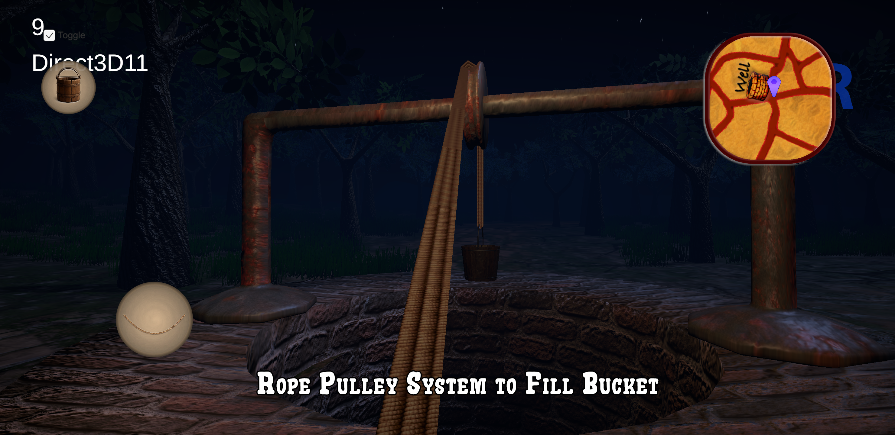
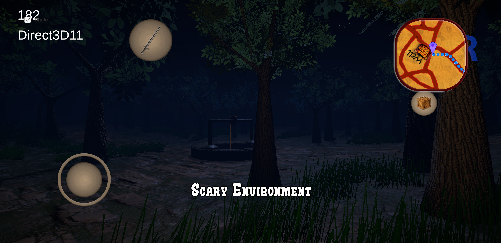
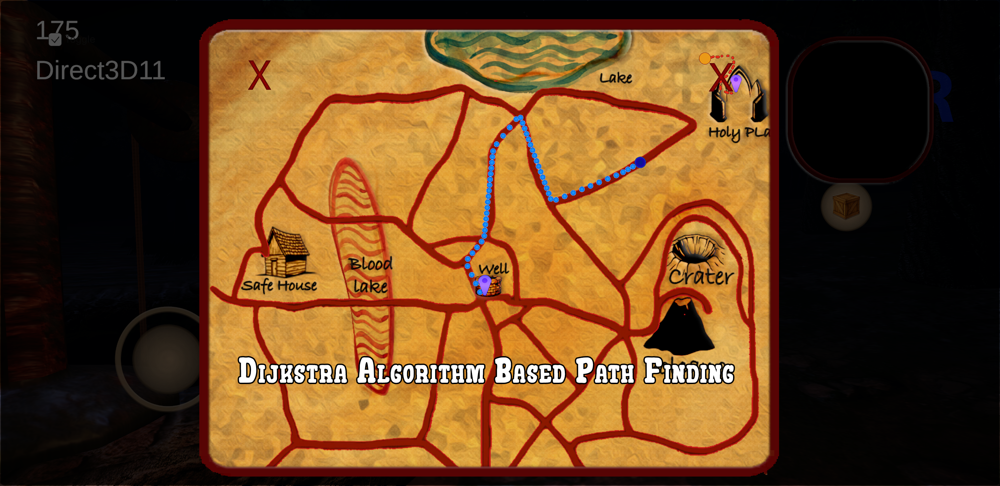
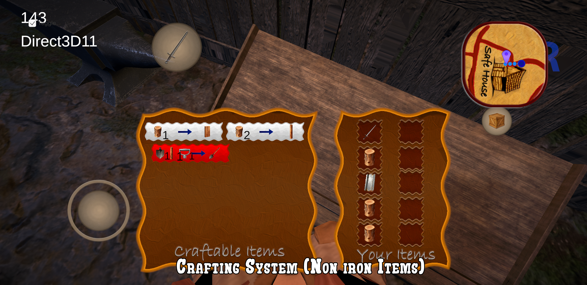
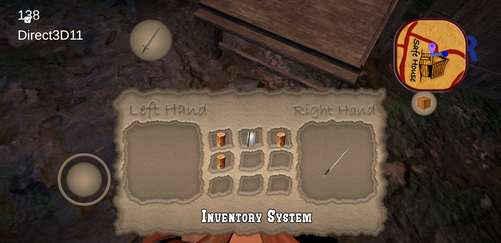

The Mission
Developing a first-person simulation game that combines resource management systems with a subtle horror-driven environment. The gameplay focuses on task-based progression, where players gather resources, grow plants, and craft tools while navigating a mysterious world.
Implemented core systems including a smooth first-person controller, inventory management, and a crafting pipeline to support structured gameplay progression. Designed interactive mechanics such as a well-based resource system, enabling dynamic player interaction with the environment.
Integrated a mini-map navigation system utilizing Dijkstra’s Algorithm for efficient pathfinding and navigation assistance. This project marks the first implementation of Dijkstra’s Algorithm, which was later extended and applied in the Taxi Simulator project, demonstrating scalability and reuse of pathfinding systems.
Enhanced visual immersion using Unity Shader Graph for custom skybox rendering, combined with atmospheric lighting and environment design to establish a subtle horror experience.
Focused on blending simulation mechanics with environmental storytelling to create an engaging and immersive gameplay loop.
Technical Implementation
Well Interaction System (Bucket Mechanic)
- Simulated rope using Unity Line Renderer with a bucket prefab attached to its endpoint.
- Synchronized bucket movement with Line Renderer endpoint via real-time Y-axis updates based on input (hold/swipe).
- Animated rope using shader-based texture offset to create realistic rope movement illusion.
- Implemented trigger-based interaction to activate water surface when bucket reaches well depth.
Inventory System (Enum-Driven Architecture)
- Developed modular inventory system using component-based item scripts attached to collectibles.
- Defined item properties using enums (item type, equip slot, unique ID).
- Implemented trigger-based item pickup with script validation.
- Currently uses partial linear search for item instantiation; planned migration to dictionary-based lookup for O(1) performance.
Crafting System (Data-Driven Recipe Engine)
- Designed crafting system without hardcoded conditions using a data-driven approach.
- Enabled multiple crafting stations (anvil, table) using a shared reusable script.
- Represented recipes using hierarchical UI containers (parent = recipe, children = required items).
- Parsed requirements into linked lists for dynamic validation and comparison with inventory data.
- Provided real-time feedback via color states (craftable / insufficient resources).
- Instantiated crafted items into inventory and re-evaluated all recipes dynamically.
Pathfinding & Mini-Map System
- Implemented navigation using Dijkstra’s Algorithm on a custom graph structure.
- Built a static 2D mini-map using UI elements as graph nodes for optimized performance.
- Connected nodes via linked list-based adjacency structure configurable in Unity Inspector.
- Projected player world position (X, Z) onto mini-map coordinates for tracking.
- Computed nearest nodes for player and destination, then calculated shortest path using Dijkstra.
- Stored path as a linked list and applied interpolation for smooth transitions between nodes.
- Recalculated paths dynamically (~1.2s intervals) for responsive navigation.
- First project implementing this system, later extended and reused in Taxi Simulator.
Visual & Atmosphere
- Created custom skybox using Unity Shader Graph.
- Designed atmospheric lighting to establish a subtle horror environment.
- Focused on immersion through environmental design and visual feedback systems.